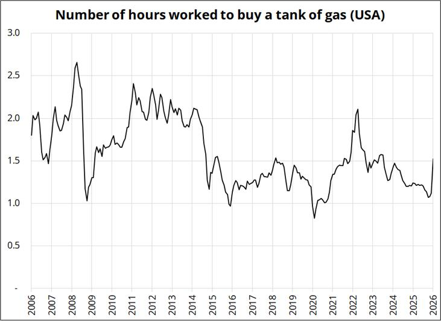

Топливный кризис США

Когда мы говорим о росте цен на бензин, чаще всего внимание сразу уходит в номинальную цену: сколько стоит галлон, насколько быстро выросла цена на заправках, как это выглядит по сравнению с прошлым месяцем или прошлым годом. Но такой подход не всегда показывает реальную нагрузку на потребителя. Бензин может стоить дороже в долларах, но если зарплаты за это время тоже выросли, то фактический удар по покупательной способности может быть мягче, чем кажется на первый взгляд.
Поэтому на графике важна не просто цена бензина, а цена полного бака, выраженная в рабочих часах. Формула здесь простая: стоимость полного бака делится на среднюю почасовую зарплату. В итоге мы получаем не “бензин стоит дорого” или “бензин стоит дешево”, а более понятный показатель: сколько часов средний американец должен отработать, чтобы полностью заправить автомобиль.
Ключевой вывод из этой метрики в том, что рост цен на бензин сейчас выглядит менее разрушительным, если сравнивать его не с прошлой ценой в долларах, а с доходом среднего работника. В марте 2026 года средняя цена regular gasoline в США составляла $3.64 за галлон, что было на 25.1% выше февраля и на 17.5% выше марта прошлого года. Одновременно средняя почасовая зарплата production and nonsupervisory workers в частном секторе США находилась на уровне $32.07 в час. Если взять условный бак на 13-14 галлонов, его заправка обходилась примерно в $47-51, то есть около 1.5-1.6 часа работы среднего американца. Это неприятный рост, но не уровень настоящего топливного шока для домохозяйств.
При этом уже в апреле давление стало заметно сильнее. По данным AAA, 27 апреля 2026 года средняя цена regular gasoline в США была $4.111 за галлон. При таком уровне тот же бак на 13-14 галлонов стоит уже примерно $53-58, то есть ближе к 1.7-1.8 часа работы. Это по-прежнему не выглядит как экстремальная зона для среднего потребителя, но направление уже важно: топливо дорожает быстрее, чем зарплата успевает сгладить этот удар
EIA в апрельском Short-Term Energy Outlook прямо связывает рост цен на бензин и дизель с более дорогой нефтью. По их прогнозу, средняя розничная цена бензина в США должна была приблизиться к $4.30 за галлон в апреле, а в среднем за 2026 год остаться выше $3.70. Дизель, по оценке EIA, должен был подняться выше $5.80 за галлон в апреле и в среднем составить около $4.80 за 2026 год. Это важная деталь: бензин сильнее виден потребителю, но дизель часто важнее для инфляции, потому что через него проходят грузоперевозки, сельское хозяйство, доставка и промышленная логистика.
IEA описывает картину еще жестче. В апрельском Oil Market Report агентство писало, что глобальное предложение нефти в марте упало на 10.1 млн баррелей в день до 97 млн баррелей в день, а ограничения движения танкеров через Ормузский пролив и атаки на энергетическую инфраструктуру привели к крупнейшему сбою поставок в истории рынка. Также IEA отмечала, что нефтеперерабатывающие мощности в Азии и на Ближнем Востоке сокращают переработку из-за проблем с сырьем, а маржа на средние дистилляты резко выросла. Это как раз объясняет, почему дизель и нефтепродукты становятся отдельной проблемой, а не просто следуют за ценой нефти.
Для США эффект дорогого топлива двойственный. С одной стороны, потребитель платит больше на заправке, а значит, часть его дохода уходит из других категорий расходов. Особенно болезненно это для низких доходов и пригородов, где автомобиль - не выбор, а необходимость. С другой стороны, США сами являются крупным производителем нефти и газа, поэтому часть эффекта компенсируется доходами энергетического сектора. При высокой нефти американские добывающие компании и энергетические регионы получают дополнительную выручку, а WTI обычно оказывается дешевле Brent за счет внутреннего баланса и логистики. EIA отдельно отмечала, что в апреле Brent-WTI spread мог расшириться до $15 за баррель именно из-за внешних перебоев и более сильного давления на Brent.
Но для Европы, Японии, Китая, Индии и многих emerging markets ситуация выглядит жестче. Эти экономики сильнее зависят от импорта энергии, а значит, рост нефти напрямую ухудшает торговый баланс и усиливает давление на валюту. Если нефть дорожает в долларах, а местная валюта одновременно слабеет, конечная цена топлива внутри страны растет еще быстрее. Для развивающихся экономик это может быстро превратиться в бюджетную проблему: либо государство субсидирует топливо и увеличивает дефицит, либо перекладывает рост цены на население и получает инфляцию вместе с социальным недовольством.
Goldman Sachs также указывал, что экономические риски шире, чем просто базовый прогноз по нефти. В заметке от 26 апреля аналитики банка говорили о риске более высоких цен на нефть, необычно дорогих нефтепродуктах, возможном дефиците продуктов переработки и беспрецедентном масштабе шока. По оценке Goldman, мировой рынок нефти во втором квартале 2026 года мог перейти от профицита в 2025 году к дефициту почти 9.6 млн баррелей в день. Это уже не история про бензин как отдельный товар, а история про нарушение баланса всей энергетической системы.
Главный вывод такой: текущий рост бензина в США пока выглядит умеренным, если считать его через рабочее время. Но это не отменяет более крупной проблемы. Энергетический шок опасен не только ценой на заправке, а тем, что он проходит через всю экономику - от грузовиков и авиаперевозок до еды, удобрений, импорта, ставок и бюджетов. Поэтому для американского потребителя это пока неприятная, но не критическая нагрузка. Для мировой экономики - это уже серьезный риск, особенно если перебои с поставками затянутся, а дорогая энергия начнет сильнее давить на рост и одновременно поддерживать инфляцию.
← Назад к статьям